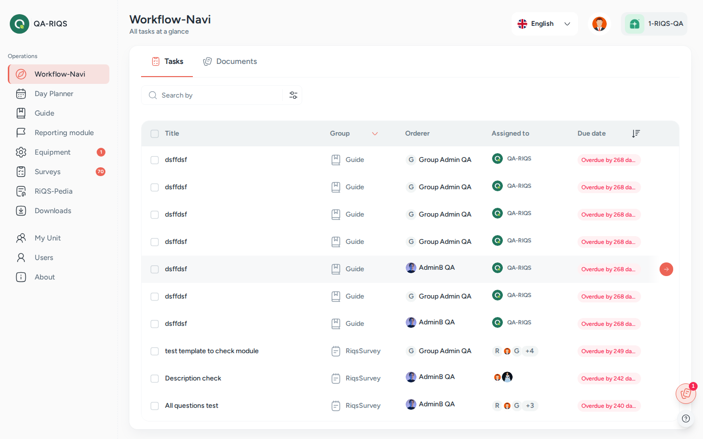

Cockpit (Workflow-Navi)¶
In one sentence: Your personal "my work" page: every task and document that is waiting for you, from every module, in one list. Menu: Workflow-Navi · Status: Live

Workflow-Navi as a Professional sees it: open tasks with group, orderer and due date. Screens show test data.
What it is¶
RIQS has many modules, and each one can give you work: a To-Do, a guide to follow, a training, a checklist from the shift plan, a maintenance job, a document to approve, a form to sign. Without a central place you would have to check every module every day.
The Cockpit is that central place. Think of it as your inbox for work. Whatever any module assigns to you shows up here, with its due date. You click a line and RIQS takes you straight to the right page to do the job. When the job is done, it leaves the list.
In the left menu this page is called Workflow-Navi. Some documents and these docs call it the Cockpit. Both names mean the same page.
The Cockpit has two tabs:
- Tasks: things you must do (To-Dos, guides, trainings, shifts, checklists, maintenance, reports, surveys).
- Documents: documents that need your action: Documents to approve, Read confirmation and Forms to sign.
Leads (administrators, Power Users and Management) can switch from Personal to Unit to see the open work of everyone in the unit.
Key terms¶
| Term | Meaning |
|---|---|
| Workflow-Navi (Cockpit) | The menu name of this page: your list of open work. These docs also call it the Cockpit. |
| Task | One piece of work assigned to you, created by another module. |
| Group | The kind of task, shown with an icon: Guide, Training, To-do, Maintenance, Reporting module, Shift, Template, Survey. Reporting items also show their type (CIRS, Complaint, Idea, Feedback, Fault, Hint). |
| Orderer | The person who gave you the task. |
| Assigned to | The person or people who must do the task. |
| Due date | When the task must be done. Shown as Due today, Due tomorrow, "Due in X days", or "Overdue by X days". |
| Personal view | Only your own tasks and documents. |
| Unit view | Tasks and documents of the other people in the selected unit. |
| Read confirmation | A document you are asked to read and confirm. |
Who uses it¶
| Role | What they typically do here |
|---|---|
| RiQS Administrator | Looks across organisations with the organisation and unit filter and the Unit view. Can delete tasks and documents from the overview. |
| Group Administrator | Works their own list and uses the Unit view to follow up units. |
| Administrator | Works their own list and uses the Unit view to follow up units. |
| Power User | Works their own list and checks the unit's open work in the Unit view. |
| Management | Works their own list and uses the Unit view to follow up the unit. |
| Professional | Works their own list: opens each task and completes it. |
How it works¶
- Another module creates work for you. For example a To-Do is assigned, a guide is shared, a shift with a guide is planned for today, a document needs your approval.
- It appears in your Cockpit. Shift and checklist tasks appear on the day itself (RIQS assigns them automatically each morning). Other tasks appear as soon as they are assigned.
- You open it. Click the line. RIQS opens the right page: the To-Do, the guide, the training, the maintenance details, the shift, the survey, or the document.
- You do it there. Complete the To-Do, finish the guide, fill in the form, approve the document, and so on.
- It leaves the list. Once it is done, the item disappears from your Cockpit and from the Unit view.
Assigned → Open in Cockpit → Done (leaves the list)
By default the list shows open tasks due from today up to 30 days ahead, plus anything still open from earlier (overdue). You can change the period with the date filter.
How to …¶
How to see and do your work¶
Who can do this: All roles 1. Click Workflow-Navi in the left menu. The Tasks tab opens. 2. Look at the Due Date column. Overdue tasks are highlighted. 3. Click a task. RIQS opens the matching page. 4. Do the work and complete it there.
Result: The task is gone from your list when you return.
How to handle documents¶
Who can do this: All roles 1. Open the Documents tab. 2. Choose Documents to approve, Read confirmation or Forms to sign. Each shows how many are waiting. 3. Click a document to open it, then approve, confirm reading, or sign.
Result: The document leaves the list once your action is recorded.
How to search and filter¶
Who can do this: All roles 1. Type in Search by to search by title. 2. Click Filter. Choose a Group, an Orderer, Assigned to, or a Date range. 3. Click Apply filter. Each active filter is shown as a chip; remove a chip to undo it, or click Reset.
Result: The list shows only matching items.
How to see the unit's open work¶
Who can do this: RiQS Administrator, Group Administrator, Administrator, Power User, Management 1. In the Cockpit, switch the view from Personal to Unit. 2. If you belong to several units, pick the unit.
Result: You see the open tasks and documents of the other people in that unit. The choice is remembered on this device.
How to look at another organisation or unit (RiQS Administrator)¶
Who can do this: RiQS Administrator 1. Open the filter. 2. Choose an Organization and a Unit, then apply.
Result: The list shows that unit's items.
How to delete tasks or documents from the overview¶
Who can do this: RiQS Administrator only 1. Tick the items (or Select all). 2. Click Delete and confirm.
Result: The items are removed from the overview.
Rules to know¶
- Done means gone. An item stays in the Cockpit from the moment it exists until it is done.
- Shift and checklist tasks appear on their day. They disappear as soon as they are completed, or after 24 hours if not.
- A checklist stays until its last task is done, not its first.
- Approvals with several approvers stay in each approver's list until the required number of approvals is reached.
- Maintenance shows as one task, "Maintenance: equipment name", which opens the maintenance overview.
- Reporting items (CIRS, complaints and so on) show the report card's title. Their due date is the earliest open To-Do or guide assigned to you for that report.
- Surveys cannot be opened from the Cockpit once their due date has passed. You see "cannot access as due date has passed".
- Personal shows only your own items. Unit shows only items assigned to other people in the unit.
- Two Power Users of the same unit see the same items in the Unit view.
- Notifications elsewhere: absence decisions show as a red dot and bell in the Shift Plan. Some menu entries, for example Equipment and Surveys, show a counter of new items.
- Only the RiQS Administrator can delete items from the Cockpit, in both the regular version and audit-safe mode.
Who can do what¶
✅ allowed · ❌ not allowed · text = condition
| Action | RiQS Administrator | Group Administrator | Administrator | Power User | Management | Professional |
|---|---|---|---|---|---|---|
| Open the Cockpit and see own tasks and documents | ✅ | ✅ | ✅ | ✅ | ✅ | ✅ |
| Open and do own tasks | ✅ | ✅ | ✅ | ✅ | ✅ | ✅ |
| Search, filter, use the date filter | ✅ | ✅ | ✅ | ✅ | ✅ | ✅ |
| Switch to the Unit view (see all tasks of the unit's users) | ✅ | ✅ | ✅ | ✅ | ✅ | ❌ |
| Filter by organisation and unit | ✅ | ❌ | ❌ | ❌ | ❌ | ❌ |
| Delete tasks from the overview (regular and audit-safe mode) | ✅ | ❌ | ❌ | ❌ | ❌ | ❌ |
| Delete documents from the overview (regular and audit-safe mode) | ✅ | ❌ | ❌ | ❌ | ❌ | ❌ |
Connected modules¶
The Cockpit has no content of its own. It collects work from:
- Open Items: To-Dos.
- Process Guide: guides and guide templates.
- Training: trainings to complete.
- Shift Plan: today's shifts and checklists.
- Equipment: maintenance and validation, including approvals.
- Incident Reports: tasks from CIRS, complaints, ideas, feedback, faults and hints.
- Surveys: surveys to fill in.
- RiQS-Pedia and Interactive documents: documents to approve, read or sign.
Open questions¶
- Management and the Unit view: the feature list says No; the role sheet says Yes. This page follows the role sheet. Please confirm.
- To-Dos from report cards open the report, not the To-Do page. Intended?
- Group filter: there is no Form entry in the Group filter. Should one be added?
- Absence decisions: should they also appear in the Cockpit, or only in the Shift Plan?
- Notification centre: is there meant to be one place for all notifications, or do they stay per module (Cockpit, Shift Plan bell, menu counters)?
Last reviewed: 2026-10-26